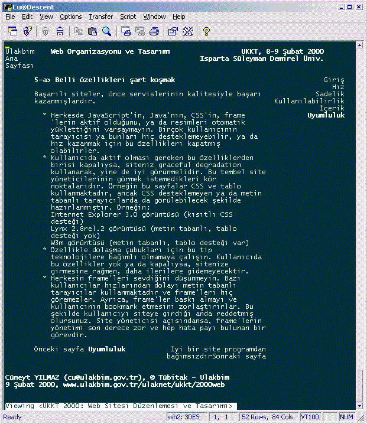

E. Ekran Görüntüleri - W3m/beta-991203
Önceki
Web Sitesi Düzenlemesi ve Tasarımı
Sonraki
E. Ekran Görüntüleri - W3m/beta-991203
W3m/beta-991203: CSS (Cascading Style Sheets) desteği yok, tablo desteği, 2 renk
İstenen sayfa yerleşimine çok yakın

Önceki
Üst Ana Başlık
Sonraki
D. Ekran Görüntüleri - Lynx 2.8rel.2
Başlangıç
VII. Oylum - Donanım
Bir
Linux Kitaplığı
Sayfası